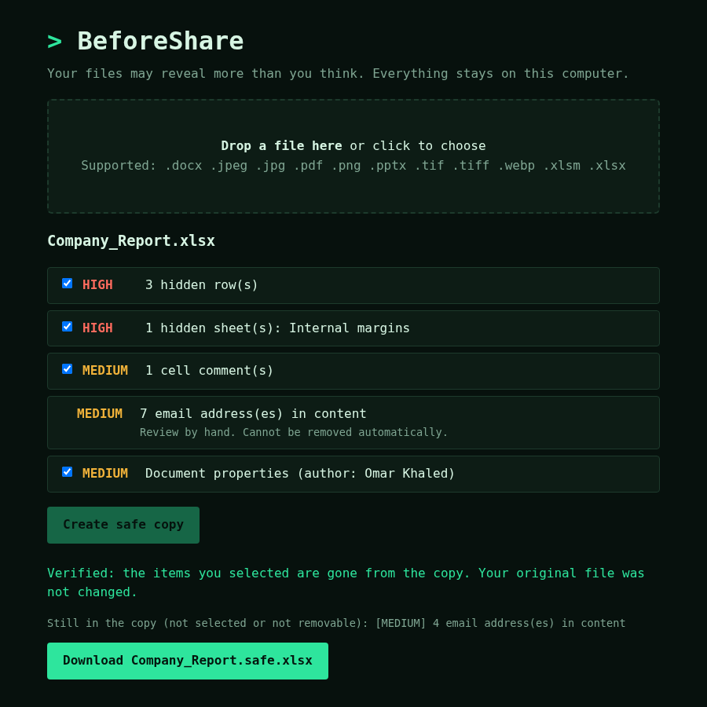

What it does
BeforeShare scans a file for hidden sheets, hidden rows, comments, tracked changes, hidden slides, speaker notes, white text in PDFs, author names, GPS locations and more. You choose what to remove. It writes a new safe copy, then scans the copy again to check the removal worked. Your original is never changed.
Offline
No cloud, no AI model. Plain rules you can read.
Verified safe copy
The copy is rescanned after cleaning.
Excel, Word, PowerPoint, PDF, images
Hidden slides and notes, white text in PDFs, GPS in photos.
A real window
Local browser window, tested in real Chrome. Also a CLI.
Examples
Excel: hidden rows and sheets, a comment, author name
$ beforeshare scan demo/Company_Report.xlsx
BeforeShare Report
File: demo/Company_Report.xlsx
Found:
[HIGH] 3 hidden row(s)
[HIGH] 1 hidden sheet(s): Internal margins
[MEDIUM] 1 cell comment(s)
[MEDIUM] 7 email address(es) in content (review manually, cannot be removed automatically)
[MEDIUM] Document properties (author: Omar Khaled)PowerPoint and PDF
$ beforeshare scan demo/Pitch_Deck.pptx
BeforeShare Report
File: demo/Pitch_Deck.pptx
Found:
[HIGH] 1 hidden slide(s): 2
[HIGH] Speaker notes on 1 slide(s): 1
[MEDIUM] 1 email address(es) in content (review manually, cannot be removed automatically)
[MEDIUM] Document properties (author: Omar Khaled, Steve Canny)
$ beforeshare clean demo/Pitch_Deck.pptx
Safe copy written: demo/Pitch_Deck.safe.pptx
Original file was not changed.
Verification: rescanned the copy, the selected items are gone.
Still present (not selected or not removable):
[MEDIUM] 1 email address(es) in content
$ beforeshare scan demo/Report_hidden.pdf
BeforeShare Report
File: demo/Report_hidden.pdf
Found:
[HIGH] Text that is invisible on the page: 1 white, 0 tiny, 0 invisible-mode span(s). Scanned PDFs with an OCR layer also show up here (review manually, cannot be removed automatically)
[MEDIUM] Document metadata (author=anonymous; creator=ReportLab PDF Library - www.reportlab.com; producer=ReportLab PDF Library - www.reportlab.com)
Install
Windows
Install Python 3.9+ from python.org (tick "Add python.exe to PATH"), then in PowerShell:
py -m pip install git+https://github.com/mohamed-elshamy-ai/beforeshare
beforeshare scan yourfile.xlsx
beforeshare-guiUntested. Should work (all dependencies publish Windows wheels). Only tested on Linux.
macOS
Python 3.9+ (
brew install python or python.org), then in Terminal:python3 -m pip install git+https://github.com/mohamed-elshamy-ai/beforeshare
beforeshare scan yourfile.xlsx
beforeshare-guiUntested. Should work. Only tested on Linux.
Linux
Python 3.9+ is usually installed. In a terminal:
python3 -m pip install --user git+https://github.com/mohamed-elshamy-ai/beforeshare
beforeshare scan yourfile.xlsx
beforeshare-guiTested. Tested on Linux (Python 3.10). The window is tested in Chrome.
Android
Untested. No app. Termux (python from pkg) might work for the command line but Pillow/pikepdf may need compiling. Not tested.
How it works
- Detect the file type and parse it with a normal library.
- Scan for hidden content and metadata, then run text rules for secrets and personal data.
- Show each finding with a severity.
- Write a safe copy without the items you chose.
- Scan the copy again and report anything still present.
الشرح بالعربي
بتفحص الملف قبل ما تبعته وتدورله على حاجات مخفية (شيتات وصفوف مخفية، تعليقات، اسم الكاتب، GPS في الصور). انت بتختار تمسح إيه، والأداة بتعمل نسخة جديدة والأصلي ما بيتغيرش، وبعدين بتفحص النسخة تاني عشان تتأكد إن المسح تم فعلاً. أوفلاين من غير AI.
Honest limits
- A safe copy is not a guarantee. Only the listed checks run.
- Text patterns (emails, cards, IDs, secrets) are reported for you to review, not removed.
- PDF hidden text is detected but not removed. Scanned PDFs with an OCR layer also trigger it.
- Excel charts and pivot tables may be lost in the copy. PowerPoint images and charts are not inspected.
- The window is tested in Chrome on Linux; other browsers and systems are untested.